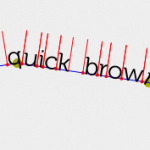
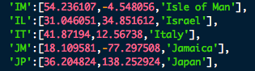

<?xml version="1.0" encoding="UTF-8"?>
<rss version="2.0"
	xmlns:content="http://purl.org/rss/1.0/modules/content/"
	xmlns:wfw="http://wellformedweb.org/CommentAPI/"
	xmlns:dc="http://purl.org/dc/elements/1.1/"
	xmlns:atom="http://www.w3.org/2005/Atom"
	xmlns:sy="http://purl.org/rss/1.0/modules/syndication/"
	xmlns:slash="http://purl.org/rss/1.0/modules/slash/"
	>

<channel>
	<title>ohadpr &#187; admin</title>
	<atom:link href="http://ohadpr.com/author/admin/feed/" rel="self" type="application/rss+xml" />
	<link>http://ohadpr.com</link>
	<description>ideas, hacks and stuff</description>
	<lastBuildDate>Tue, 29 May 2012 07:08:58 +0000</lastBuildDate>
	<language>en</language>
	<sy:updatePeriod>hourly</sy:updatePeriod>
	<sy:updateFrequency>1</sy:updateFrequency>
	<generator>http://wordpress.org/?v=3.3.1</generator>
		<item>
		<title>Terrain &#8211; iPad app</title>
		<link>http://ohadpr.com/2010/07/terrain-ipad-app/</link>
		<comments>http://ohadpr.com/2010/07/terrain-ipad-app/#comments</comments>
		<pubDate>Fri, 30 Jul 2010 16:03:17 +0000</pubDate>
		<dc:creator>admin</dc:creator>
				<category><![CDATA[]]></category>

		<guid isPermaLink="false">http://ohadpr.com/?p=282</guid>
		<description><![CDATA[I&#8217;ve re-written my 10 year old Terrain-Engine as an iPad app. It uses OpenGL Shaders and was lots of fun to write. Get it for your iPad:]]></description>
			<content:encoded><![CDATA[<p>I&#8217;ve re-written my 10 year <a href="../../../2001/08/opengl-terrain-engine/index.html">old Terrain-Engine</a> as an iPad app. It uses OpenGL Shaders and was lots of fun to write.</p>
<p>Get it for your iPad:</p>
<p><center><a href="http://appsto.re/terrain?code=btn_t4"></a></center></p>
<p><object width="549" height="437"><param name="movie" value="http://www.youtube.com/v/OAJiRqhJ9og&amp;hl=en_US&amp;fs=1?rel=0&amp;hd=1"></param><param name="allowFullScreen" value="true"></param><param name="allowscriptaccess" value="always"></param><embed src="http://www.youtube.com/v/OAJiRqhJ9og&hl=en_US&fs=1?rel=0&hd=1" type="application/x-shockwave-flash" allowscriptaccess="always" allowfullscreen="true" width="549" height="437"></embed></object></p>
]]></content:encoded>
			<wfw:commentRss>http://ohadpr.com/2010/07/terrain-ipad-app/feed/</wfw:commentRss>
		<slash:comments>4</slash:comments>
		</item>
		<item>
		<title>Google-Voice vs. Skype</title>
		<link>http://ohadpr.com/2010/05/google-voice-vs-skype/</link>
		<comments>http://ohadpr.com/2010/05/google-voice-vs-skype/#comments</comments>
		<pubDate>Sat, 22 May 2010 20:10:10 +0000</pubDate>
		<dc:creator>admin</dc:creator>
				<category><![CDATA[]]></category>

		<guid isPermaLink="false">http://ohadpr.com/?p=280</guid>
		<description><![CDATA[I believe that in a few years Google-Voice (GV) will be significantly larger than it is now, and that will be due to growth in the Desktop/Mobile user segment not standard-phone users. The advantage will all boil down to the &#8230; <a href="http://ohadpr.com/2010/05/google-voice-vs-skype/">Continue reading <span class="meta-nav">&#8594;</span></a>]]></description>
			<content:encoded><![CDATA[<p>I believe that in a few years Google-Voice (GV) will be significantly larger than it is now, and that will be due to growth in the Desktop/Mobile user segment not standard-phone users. The advantage will all boil down to the fact that GV gave users a free US phone number to start with.</p>
<p>Here&#8217;s how things will evolve:</p>
<ul>
<li>iPhone OS4 comes out, VOIP apps can run in the background</li>
<li>People start using Skype all the time in the background and whenever they have WiFi its great</li>
<li>GV will come out with an iPhone app that does their VOIP calls over WiFi as well (that&#8217;s legit and Apple will approve it)</li>
<li>Guess what, GV gives you a free incoming number so you can now make and receive calls, most of the time (when you&#8217;re on WiFi and heck maybe also on 3G)</li>
<li>This will all be replicated (if not executed earlier) on Android devices which will find GV to be the default VOIP app, and oh yeah did I mention you get a free US number?</li>
</ul>
<p>This battle will be over the segment of users who are around WiFi coverage enough of the time and have smartphones that will allow them to use WiFi for making/receiving calls when its available. GV&#8217;s architecture lends itself beautifully to this as it gracefully degrades from direct VOIP calls to standard &#8216;to your phone number&#8217; calls. Skype has similar functionality though its really not implemented so well and Skype&#8217;s focus has been solely on the VOIP-calls segment while GV started from standard calls and will now expand with Desktop/Mobile VOIP apps.</p>
<p>GV&#8217;s current issues with call-delays (caused by the fact that all calls are tunneled through Google servers so that Google can provide conferencing/recording functionality) will go away. All these features will be implemented on the user&#8217;s Desktop/Mobile-device and so call quality will go up and lag will go down to nothing.</p>
<p>Its going to interesting and fun, can&#8217;t wait to get GV background app on my iPhone.</p>
]]></content:encoded>
			<wfw:commentRss>http://ohadpr.com/2010/05/google-voice-vs-skype/feed/</wfw:commentRss>
		<slash:comments>0</slash:comments>
		</item>
		<item>
		<title>HTML5 Text Path demo</title>
		<link>http://ohadpr.com/2010/05/html5-text-path-demo/</link>
		<comments>http://ohadpr.com/2010/05/html5-text-path-demo/#comments</comments>
		<pubDate>Fri, 07 May 2010 15:28:30 +0000</pubDate>
		<dc:creator>admin</dc:creator>
				<category><![CDATA[]]></category>

		<guid isPermaLink="false">http://ohadpr.com/?p=272</guid>
		<description><![CDATA[I&#8217;ve been experimenting with various HTML5 (specifically SVG and Canvas) elements recently and was looking at ways to fully control text in a dynamic and fast manner. SVG offers Path elements but these are defined in markup which feels limiting. &#8230; <a href="http://ohadpr.com/2010/05/html5-text-path-demo/">Continue reading <span class="meta-nav">&#8594;</span></a>]]></description>
			<content:encoded><![CDATA[<p><a href="../../../wp-content/uploads/2010/05/Screen-shot-2010-05-06-at-6.09.43-PM.png"></a>I&#8217;ve been experimenting with various HTML5 (specifically SVG and Canvas) elements recently and was looking at ways to fully control text in a dynamic and fast manner. SVG offers Path elements but these are defined in markup which feels limiting. It made much more sense to define paths myself and just figure out how to layout the text on these paths from JavaScript.</p>
<p>I learned a lot about some of the ways you can play around with Fonts. You see usually fonts are rendered by the OS or custom libraries because rendering fonts is such an important part of rendering beautiful web-pages. Another interesting option is to break-down a TTF font-file into its various path elements and beziers, ignoring a lot of important data, and just letting the browser render these paths through SVG. Its a beautiful process enabled by a library called <a href="http://wiki.github.com/sorccu/cufon/about">Cufón</a>. This library will literally take a TTF file and spit out a JSON representation of its paths.</p>
<p>Once you have your font-data in SVG paths you can basically position/scale/rotate them however you&#8217;d like, in the following example I show some code that traces a path and positions text on that path. The code uses the <a href="http://raphaeljs.com/">Raphael</a> JS library which makes it easier to deal with modern graphics in browsers.</p>
<p><a href="../../../etc/proj/html5-text-demo/index.html">Live demo</a></p>
<p><object classid="clsid:d27cdb6e-ae6d-11cf-96b8-444553540000" width="560" height="340" codebase="http://download.macromedia.com/pub/shockwave/cabs/flash/swflash.cab#version=6,0,40,0"><param name="allowFullScreen" value="true" /><param name="allowscriptaccess" value="always" /><param name="src" value="http://www.youtube.com/v/fPSljTNz3iA&amp;hl=en_US&amp;fs=1&amp;rel=0&amp;hd=1" /><param name="allowfullscreen" value="true" /><embed type="application/x-shockwave-flash" width="560" height="340" src="http://www.youtube.com/v/fPSljTNz3iA&hl=en_US&fs=1&rel=0&hd=1" allowscriptaccess="always" allowfullscreen="true"></embed></object></p>
]]></content:encoded>
			<wfw:commentRss>http://ohadpr.com/2010/05/html5-text-path-demo/feed/</wfw:commentRss>
		<slash:comments>0</slash:comments>
		</item>
		<item>
		<title>Countries, Approximate Lat-Lon and ISO 3166-1 alpha-2</title>
		<link>http://ohadpr.com/2010/04/countries-approximate-lat-lon-and-iso-3166-1-alpha-2/</link>
		<comments>http://ohadpr.com/2010/04/countries-approximate-lat-lon-and-iso-3166-1-alpha-2/#comments</comments>
		<pubDate>Tue, 27 Apr 2010 06:02:51 +0000</pubDate>
		<dc:creator>admin</dc:creator>
				<category><![CDATA[code]]></category>

		<guid isPermaLink="false">http://ohadpr.com/?p=252</guid>
		<description><![CDATA[We&#8217;re working on a visualization of real-time clicks on our http://appsto.re short URL. The cheap GeoIP database we use to convert IP address to geographical coordinates only gives us country-codes. ISO 3166-1 defines the encoding of &#8221;countries, dependent territories, and special &#8230; <a href="http://ohadpr.com/2010/04/countries-approximate-lat-lon-and-iso-3166-1-alpha-2/">Continue reading <span class="meta-nav">&#8594;</span></a>]]></description>
			<content:encoded><![CDATA[<p>We&#8217;re working on a visualization of real-time clicks on our http://appsto.re short URL. The cheap GeoIP database we use to convert IP address to geographical coordinates only gives us country-codes. <a href="http://en.wikipedia.org/wiki/ISO_3166-1">ISO 3166-1</a> defines the encoding of &#8221;countries, dependent territories, and special areas of geographical interest&#8221; into codes, and the 2-character encoding subset is defined in <a href="http://en.wikipedia.org/wiki/ISO_3166-1_alpha-2">ISO 3166-1 alpha-2</a>. A country like France ends up being &#8216;FR&#8217;, Israel is &#8216;IL&#8217;, you get it.</p>
<p>When we wanted to plot this onto Google Maps we needed to convert country-codes to <a href="http://en.wikipedia.org/wiki/Geographic_coordinate_system#Latitude_and_longitude">Lat/Lon</a> (map coordinates) and apparently there isn&#8217;t such a simple mapping. One reason may be that a country like France has a political border which is well defined but there&#8217;s no real point on the map that defines it, that&#8217;s pretty arbitrary. A bunch of companies (Google, Yahoo, etc) have what&#8217;s called Geocoders which are pieces of software that will take an address and return the Lat/Lon representation of it. Most Geocoders don&#8217;t like 2-letter country-code though, bummer.</p>
<p>What we ended up doing is digging out this information from a few Geocoders that do like to chew up 2-character codes, and for the sake of other developers we wanted to curate the data and make it easily available and consumable for other developers. I&#8217;m including a Google Spreadhseet with all the values, as well as a JSON dictionary that gives you country name, lat and lon given a country-code. I also included this data for all USA and Canadian states. Feel free to use this to facilitate visualizations of data or anything else you think is cool.</p>
<p><a href="../../../wp-content/uploads/2010/04/Screen-shot-2010-04-27-at-1.55.45-AM.png"></a>The data:</p>
<p><a href="https://spreadsheets.google.com/ccc?key=0AlKAi_VG7SuadHFZOERJNENURE9NMmpKWDU4Rk9xbUE&hl=en">Online spreadsheet<br />
</a><a href="../../../wp-content/uploads/2010/04/countryCodes.js">JSON file</a><br />
<a href="../../../wp-content/uploads/2010/04/CountryLongLat.sql_.zip">MySQL Data Dump</a> (tnx Dvir Volk)</p>
<p>And here&#8217;s the embedded data just for fun:<br />
<iframe width='580' height='300' frameborder='0' src='https://spreadsheets.google.com/pub?key=0AlKAi_VG7SuadHFZOERJNENURE9NMmpKWDU4Rk9xbUE&hl=en&single=true&gid=0&output=html&widget=true'></iframe></p>
]]></content:encoded>
			<wfw:commentRss>http://ohadpr.com/2010/04/countries-approximate-lat-lon-and-iso-3166-1-alpha-2/feed/</wfw:commentRss>
		<slash:comments>3</slash:comments>
		</item>
		<item>
		<title>What does Google Voice on your Desktop mean?</title>
		<link>http://ohadpr.com/2010/04/what-does-google-voice-on-your-desktopmean/</link>
		<comments>http://ohadpr.com/2010/04/what-does-google-voice-on-your-desktopmean/#comments</comments>
		<pubDate>Fri, 09 Apr 2010 08:40:41 +0000</pubDate>
		<dc:creator>admin</dc:creator>
				<category><![CDATA[opinion]]></category>

		<guid isPermaLink="false">http://ohadpr.com/?p=248</guid>
		<description><![CDATA[It seems like Google is testing a Desktop Client for its Google Voice service. Google acquired a company called Gizmo5 some time ago specifically for this reason. GV (Google Voice) is a service that gives you a single virtual US &#8230; <a href="http://ohadpr.com/2010/04/what-does-google-voice-on-your-desktopmean/">Continue reading <span class="meta-nav">&#8594;</span></a>]]></description>
			<content:encoded><![CDATA[<p>It seems like Google is <a href="http://techcrunch.com/2010/04/07/google-testing-google-voice-desktop-app-internally/">testing a Desktop Client</a> for its <a href="http://voice.google.com/">Google Voice</a> service. Google acquired a company called <a href="http://www.google.com/gizmo5/">Gizmo5</a> some time ago specifically for this reason.</p>
<p>GV (Google Voice) is a service that gives you a single virtual US phone number where people can call/SMS you and get forwarded to whatever landline/mobile phone you may be using at the moment. Its a pretty good service and should continue improving in the near future.</p>
<p>What does a Desktop version mean? I&#8217;ll try to summarize it into a few points:s</p>
<ul>
<li>The Desktop version is something like a dashboard + an endpoint bundled together</li>
<li>This endpoint is so much better than a landline/mobile endpoint because you won&#8217;t experience lag and call-quality should be optimal</li>
<li>You&#8217;ll have full and interactive control of GV features such as conferencing, recording calls, etc</li>
<li>You&#8217;ll be able to place 100% VOIP calls to other GV subscribers who are using a Desktop version.</li>
<li>A Desktop version of GV is a first step, it will be followed by Mobile versions which let you place/receive calls over WiFi/3G, this lets Google bypass Carriers such as AT&amp;T.</li>
<li>GV with a Desktop version is potentially better than <a href="http://www.skype.com/">Skype</a> because it comes with a free US phone number and falls back to forwarding calls to your mobile/landline.</li>
</ul>
<p>Questions:</p>
<ul>
<li>Right now placing GV calls is free, which is odd. Why odd? because it should be costing Google a shitload of money. I can only assume that because Google is buying termination on both sides, and both sides (carriers) may be charging their clients for receiving the call, Google is probably ending up with a net zero cost for this scenario.</li>
<li>Once you place calls from GV Desktop the result of this equation will be negative, and if my assumption is correct I predict Google won&#8217;t let you place free calls from Desktop/Mobile clients but will charge you for them, just as Skype does.</li>
</ul>
<p>In short, I can&#8217;t wait to try it out rather than forwarding GV to my landline/mobile phones, at least when I&#8217;m home.</p>
]]></content:encoded>
			<wfw:commentRss>http://ohadpr.com/2010/04/what-does-google-voice-on-your-desktopmean/feed/</wfw:commentRss>
		<slash:comments>0</slash:comments>
		</item>
		<item>
		<title>7 things the iPad will change</title>
		<link>http://ohadpr.com/2010/04/7-things-the-ipad-will-change/</link>
		<comments>http://ohadpr.com/2010/04/7-things-the-ipad-will-change/#comments</comments>
		<pubDate>Sat, 03 Apr 2010 09:03:48 +0000</pubDate>
		<dc:creator>admin</dc:creator>
				<category><![CDATA[opinion]]></category>

		<guid isPermaLink="false">http://ohadpr.com/?p=225</guid>
		<description><![CDATA[There&#8217;s so much commotion about the iPad that its hard to reduce its debut tomorrow to any single value proposition. I think the impact of this device on how we consume and interact with digital content will be nothing short &#8230; <a href="http://ohadpr.com/2010/04/7-things-the-ipad-will-change/">Continue reading <span class="meta-nav">&#8594;</span></a>]]></description>
			<content:encoded><![CDATA[<p></p>
<p>There&#8217;s so much commotion about the iPad that its hard to reduce its debut tomorrow to any single value proposition. I think the impact of this device on how we consume and interact with digital content will be nothing short of <a href="http://www.urbandictionary.com/define.php?term=zomg">ZOMG</a>.</p>
<p>Here are 7 things I think the iPad will change:</p>
<ul>
<li>My laptop has just turned into a desktop, and my (future) iPad is the only computer I&#8217;ll be taking with me when I leave home</li>
<li>If you have an iPhone prepare to use it significantly less &#8211; unless you&#8217;re running down the street or something</li>
<li>Most people over 50 are going to find themselves 10x more productive and 10x less stressful using this device vs. their PC</li>
<li>It will take a lot of what we do on a PC and make it simpler, sexier and more comfortable &#8211; Apple are really good at this</li>
<li>We will consume significantly more content because its going to be so convenient &#8211; Books, Videos, Books, Blogs, News-Papers, Books.</li>
<li>Written content will see the biggest boom now that things like Harry Potter&#8217;s &#8220;<a href="http://www.youtube.com/watch?v=9X91cOo7UbM#t=51s">The Daily Prophet</a>&#8221; are possible.</li>
<li>Apple stock will dip when the market opens Monday April 5&#8242;th 2010 &#8211; It usually does as last week&#8217;s buyers sell to make a profit, oh and I have some April $230 PUTs</li>
</ul>
<p>And here&#8217;s for some laughs:</p>
<p><object style="display: block;" classid="clsid:d27cdb6e-ae6d-11cf-96b8-444553540000" width="360" height="301" codebase="http://download.macromedia.com/pub/shockwave/cabs/flash/swflash.cab#version=6,0,40,0"><param name="bgcolor" value="#000000" /><param name="flashvars" value="autoPlay=false" /><param name="src" value="http://media.mtvnservices.com/mgid:cms:item:comedycentral.com:268823" /><param name="wmode" value="window" /><param name="allowfullscreen" value="true" /><embed style="display: block;" type="application/x-shockwave-flash" width="360" height="301" src="http://media.mtvnservices.com/mgid:cms:item:comedycentral.com:268823" allowfullscreen="true" wmode="window" flashvars="autoPlay=false" bgcolor="#000000"></embed></object></p>
<p><object classid="clsid:d27cdb6e-ae6d-11cf-96b8-444553540000" width="384" height="283" codebase="http://download.macromedia.com/pub/shockwave/cabs/flash/swflash.cab#version=6,0,40,0"><param name="align" value="middle" /><param name="allowScriptAccess" value="always" /><param name="allowFullScreen" value="true" /><param name="quality" value="high" /><param name="bgcolor" value="#000000" /><param name="src" value="http://widget.nbc.com/videos/nbcshort_at.swf?CXNID=1000004.10045NXC&amp;widID=4727a250e66f9723&amp;clipID=1216117&amp;showID=243&amp;siteurl=undefined" /><param name="allowfullscreen" value="true" /><embed type="application/x-shockwave-flash" width="384" height="283" src="http://widget.nbc.com/videos/nbcshort_at.swf?CXNID=1000004.10045NXC&widID=4727a250e66f9723&clipID=1216117&showID=243&siteurl=undefined" bgcolor="#000000" quality="high" allowfullscreen="true" allowscriptaccess="always" align="middle"></embed></object></p>
<p><object classid="clsid:d27cdb6e-ae6d-11cf-96b8-444553540000" width="384" height="283" codebase="http://download.macromedia.com/pub/shockwave/cabs/flash/swflash.cab#version=6,0,40,0"><param name="align" value="middle" /><param name="allowScriptAccess" value="always" /><param name="allowFullScreen" value="true" /><param name="quality" value="high" /><param name="bgcolor" value="#000000" /><param name="src" value="http://widget.nbc.com/videos/nbcshort_at.swf?CXNID=1000004.10045NXC&amp;widID=4727a250e66f9723&amp;clipID=1216046&amp;showID=243&amp;siteurl=undefined" /><param name="allowfullscreen" value="true" /><embed type="application/x-shockwave-flash" width="384" height="283" src="http://widget.nbc.com/videos/nbcshort_at.swf?CXNID=1000004.10045NXC&widID=4727a250e66f9723&clipID=1216046&showID=243&siteurl=undefined" bgcolor="#000000" quality="high" allowfullscreen="true" allowscriptaccess="always" align="middle"></embed></object></p>
]]></content:encoded>
			<wfw:commentRss>http://ohadpr.com/2010/04/7-things-the-ipad-will-change/feed/</wfw:commentRss>
		<slash:comments>0</slash:comments>
		</item>
	</channel>
</rss>

<!-- Localized -->